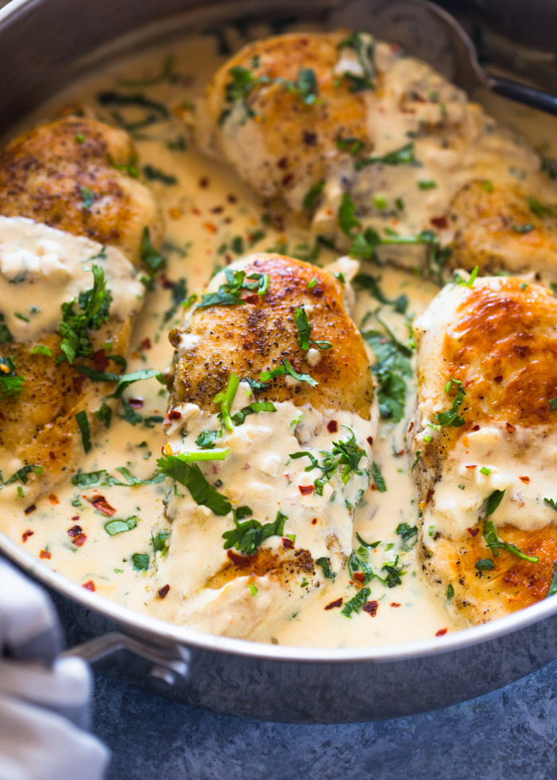

Creamy Cilantro Chicken

It is... Alive??
The Jacquin's Creamy Cilantro Chicken aren't an ordinary recipe, this one will receive much tompero!
Chicken breasts in a light cajun and cilantro cream sauce are best served with cubed red potatoes and
green beans or asparagus. Dish can also be served over rice, pasta, or egg noodles.
Ingredients (With Tompero)
- 6 thin skinless, boneless chicken breasts
- 1 tablespoon Cajun seasoning, divided
- salt and ground black pepper to taste
- 2 tablespoons olive oil
- 4 green onions, sliced
- 1 red bell pepper, sliced
- 2 cups chicken broth
- ¼ cup dry white wine
- ¾ cup heavy cream
- ½ cup halved cherry tomatoes
- ½ cup chopped cilantro
Recipe Instructions
- Pat chicken breasts dry and sprinkle with 1/2 the Cajun seasoning, salt, and pepper. Set aside.
- Heat olive oil in a large skillet over medium-high heat. Add chicken to the very hot oil and cook,
turning occasionally, until juices run clear when chicken is pricked with
a fork and both sides are browned,
5 to 7 minutes. Transfer chicken to a plate and set aside, reserving drippings in the skillet.
- Add green onions and bell pepper to the drippings in the skillet. Cook until tender, about 1 minute.
Add chicken broth and wine and bring to a boil, about 5 minutes.
Simmer until juices have reduced to
about 3/4 cup, about 5 minutes more. Add cream and continue to simmer to reduce slightly, 1 to 2 minutes.
Stir in tomatoes and cilantro, plus remaining Cajun seasoning. Season with salt and pepper.
- Add chicken to the skillet, cover, and cook until heated through, about 3 minutes more.
Return to Main Page